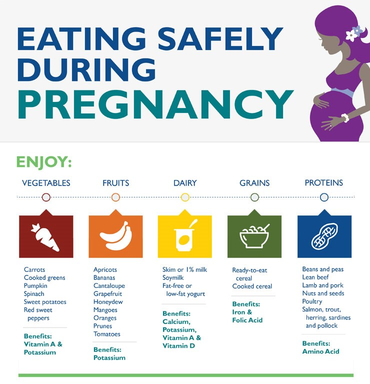

Dietary and Caloric Recommendations
To maintain a healthy pregnancy, approximately 300 extra calories are needed each day. These calories should come from a balanced diet of protein, fruits, vegetables, and whole grains. Sweets and fats should be kept to a minimum. A healthy, well-balanced diet can also help to reduce some pregnancy symptoms, such as nausea and constipation.
Fluid Intake During Pregnancy
Fluid intake is also an important part of pregnancy nutrition. Follow these recommendations for fluid intake during pregnancy:
- You can take in enough fluids by drinking several glasses of water each day, in addition to the fluids in juices and soups. Talk to your health care provider or midwife about restricting your intake of caffeine and artificial sweeteners.
- Avoid all forms of alcohol.
Ideal Foods to Eat During Pregnancy
The following foods are beneficial to your health and fetal development during pregnancy:
- Vegetables: carrots, sweet potatoes, pumpkin, spinach, cooked greens, tomatoes, and red sweet peppers (for vitamin A and potassium)
- Fruits: cantaloupe, honeydew, mangoes, prunes, bananas, apricots, oranges, and red or pink grapefruit (for potassium)
- Dairy: fat-free or low-fat yogurt, skim or 1% milk, soymilk (for calcium, potassium, vitamins A and D)
- Grains: ready-to-eat cereals/cooked cereals (for iron and folic acid)
- Proteins: beans and peas; nuts and seeds; lean beef, lamb, and pork; salmon, trout, herring, sardines, and pollock
Foods to Avoid During Pregnancy
Avoid eating the following foods during pregnancy:
- Unpasteurized milk and foods made with unpasteurized milk (soft cheeses, including feta, queso blanco and fresco, Camembert, brie or blue-veined cheeses—unless labeled “made with pasteurized milk")
- Hot dogs and luncheon meats (unless they are heated until steaming hot before serving)
- Raw and undercooked seafood, eggs, and meat. Do not eat sushi made with raw fish (cooked sushi is safe).
- Refrigerated pâté and meat spreads
- Refrigerated smoked seafood

Guidelines for Safe Food Handling
Follow these general food safety guidelines when handling and cooking food:
- Wash. Rinse all raw produce thoroughly under running tap water before eating, cutting or cooking.
- Clean. Wash your hands, knives, countertops, and cutting boards after handling and preparing uncooked foods.
- Cook. Cook beef, pork, or poultry to a safe internal temperature verified by a food thermometer.
- Chill. Promptly refrigerate all perishable food.
Prenatal Vitamin and Mineral Supplements
Most health care providers or midwives will prescribe a prenatal supplement before conception or shortly afterward to make sure that all of your nutritional needs are met. However, a prenatal supplement does not replace a healthy diet.
The Importance of Folic Acid
The U.S. Public Health Service recommends that all women of childbearing age consume 400 micrograms (0.4 mg) of folic acid each day. Folic acid is a nutrient found in:
- Some green leafy vegetables
- Most berries, nuts, beans, citrus fruits, and fortified breakfast cereals
- Some vitamin supplements.
Folic acid can help reduce the risk of neural tube defects, which are birth defects of the brain and spinal cord. Neural tube defects can lead to varying degrees of paralysis, incontinence, and sometimes intellectual disability.
Folic acid is the most helpful during the first 28 days after conception, when most neural tube defects occur. Unfortunately, you may not realize that you are pregnant before 28 days. Therefore, your intake of folic acid should begin before conception and continue throughout your pregnancy. Your health care provider or midwife will recommend the appropriate amount of folic acid to meet your individual needs.
For example, women who take anti-epileptic drugs may need to take higher doses of folic acid to prevent neural tube defects. They should consult with their health care provider when considering trying to conceive.
Gestational diabetes diet
Gestational diabetes is high blood sugar (glucose) that starts during pregnancy. Eating a balanced, healthy diet can help you manage gestational diabetes. The diet recommendations that follow are for women with gestational diabetes who do NOT take insulin.
For a balanced diet, you need to eat a variety of healthy foods. Reading food labels can help you make healthy choices when you shop.
If you are a vegetarian or on a special diet, talk with your health care provider to make sure you're getting a balanced diet.
In general, you should eat:
- Plenty of whole fruits and vegetables
- Moderate amounts of lean proteins and healthy fats
- Moderate amounts of whole grains, such as bread, cereal, pasta, and rice, plus starchy vegetables, such as corn and peas
- Fewer foods that have a lot of sugar, such as soft drinks, fruit juices, and pastries
You should eat three small- to moderate-sized meals and one or more snacks each day. Do not skip meals and snacks. Keep the amount and types of food (carbohydrates, fats, and proteins) about the same from day to day. This can help you keep your blood sugar stable.
CARBOHYDRATES
- Less than half the calories you eat should come from carbohydrates.
- Most carbohydrates are found in starchy or sugary foods. They include bread, rice, pasta,cereal, potatoes, peas, corn, fruit, fruit juice, milk, yogurt, cookies, candy, soda, and other sweets.
- High-fiber, whole-grain carbohydrates are healthy choices. These types of carbohydrates are called complex carbohydrates.
- Try to avoid eating simple carbohydrates, such as potatoes, french-fries, white rice, candy, soda, and other sweets. This is because they cause your blood sugar to rise quickly after you eat such foods.
- Vegetables are good for your health and your blood sugar. Enjoy lots of them.
- Carbohydrates in food are measured in grams. You can learn to count the amount of carbohydrates in the foods that you eat.
GRAINS, BEANS, AND STARCHY VEGETABLES
Eat 6 or more servings a day. One serving equals:
- 1 slice bread
- 1 ounce (28 grams) ready-to-eat cereal
- 1/2 cup (105 grams) cooked rice or pasta
Choose foods loaded with vitamins, minerals, fiber, and healthy carbohydrates. They include:
- Whole-grain breads and crackers
- Whole grain cereals
- Whole grains, such as barley or oats
- Beans
- Brown or wild rice
- Whole-wheat pasta
- Starchy vegetables, such as corn and peas
Use whole-wheat or other whole-grain flours in cooking and baking. Eat more low-fat breads, such as tortillas, English muffins, and pita bread.
VEGETABLES
Eat 3 to 5 servings a day. One serving equals:
- 1 cup (340 grams) leafy, green vegetables
- 1 cup (340 grams) cooked or chopped raw leafy vegetables
- 3/4 cup (255 grams) vegetable juice
- 1/2 cup (170 grams) of chopped vegetables, cooked or raw
Healthy vegetable choices include:
- Fresh or frozen vegetables without added sauces, fats, or salt
- Dark green and deep yellow vegetables, such as spinach, broccoli, romaine lettuce, carrots, and peppers
FRUITS
Eat 2 to 4 servings a day. One serving equals:
- 1 medium whole fruit (such as a banana, apple, or orange)
- 1/2 cup (170 grams) chopped, frozen, cooked, or canned fruit
- 3/4 cup (180 milliliters) fruit juice
Healthy fruit choices include:
- Whole fruits rather than juices. They have more fiber.
- Citrus fruits, such as oranges, grapefruits, and tangerines.
- Fruit juices without added sugar.
- Fresh fruits and juices. They are more nutritious than frozen or canned varieties.
PROTEIN (MEAT, FISH, DRY BEANS, EGGS, AND NUTS)
Eat 2 to 3 servings a day. One serving equals:
- 2 to 3 oz (55 to 84 grams) cooked meat, poultry, or fish
- 1/2 cup (170 grams) cooked beans
- 1 egg
- 2 tablespoons (30 grams) peanut butter
Healthy protein choices include:
- Fish and poultry. Remove the skin from chicken and turkey.
- Lean cuts of beef, veal, pork, or wild game.
- Trim all visible fat from meat. Bake, roast, broil, grill, or boil instead of frying. Foods from this group are excellent sources of B vitamins, protein, iron, and zinc.
Diet to Reduce Preeclampsia
Preeclampsia is a complication of pregnancy. With preeclampsia, you might have high blood pressure, high levels of protein in urine that indicate kidney damage (proteinuria), or other signs of organ damage. Preeclampsia usually begins after 20 weeks of pregnancy in women whose blood pressure had previously been in the standard range.
Preeclampsia may develop after delivery of a baby, a condition known as postpartum preeclampsia.
There are foods that lower blood pressure simply by having them in abundance in your diet. Many contain electrolytes that help the kidneys get rid of fluids in your blood vessels. This naturally reduces the pressure inside them.
- Fresh fruits: Most fruits are high in potassium and naturally lower blood pressure. The fruits with the highest potassium content include bananas, passionfruit, jackfruit, apricots, oranges, nectarine, cantaloupe, and grapefruit.
- Juices: Fruit juices are also great options for reducing blood pressure. Orange juice, prune juice, and most vegetable juices contain lots of potassium.
- Avocados: These have nearly the same blood-pressure-lowering properties as bananas and have healthy monounsaturated fats.
- Dried fruits: Because fruits are dried, you get concentrated doses of potassium to lower your blood pressure. Dried bananas and apricots have the highest potassium content; however, you can eat raisins, dried apples, prunes, papaya, and figs as well.
- Vegetables: Many vegetables are packed with as much potassium as fruits. Eat them fresh for the best benefit. Among veggies with potassium, spinach tops the list. Other great blood-pressure-lowering vegetables include beets, sweet potatoes, russet potatoes (peels included), carrots, acorn squash, and broccoli.
- Beans and lentils: These are great for soups or mashed into a dip for crackers or tortillas.
- Coconut water: Instead of water, try cold and refreshing coconut water, which contains potassium to lower your blood pressure.
- Dairy products: These are not incredibly high in potassium but will still be good choices for snacking. Yogurt and plant-based milk (soy or almond milk) have been shown to reduce blood pressure in research studies.
- Meat and fish: Among these, chicken and salmon are the best options.
- Nuts: Both almonds and cashews are excellent to snack on. Mix them with dried fruit for added blood pressure-lowering effects.
Foods to avoid with Preeclampsia during pregnancy
- Salty snack foods: Salty snack foods contain sodium, which causes fluid to build up in your arteries, raising your blood pressure. Some of these may not even taste salty. Avoid chips, French fries, popcorn, tacos, and burritos.
- Processed bread and sandwiches: Bread, pizza, and rolls are higher in sodium than you’d suspect by tasting them. Sandwiches with cured meats, bacon, and cold cuts have added salt by virtue of the processed meats. A peanut butter sandwich has the added sodium (salt) that comes from the peanuts.
- Soups: Canned soups and some you make at home are also higher in sodium than they taste. If you are making soup, you can adjust the salt content of the soup—something you can’t do with canned soups.
- Processed desserts: These do not necessarily raise your blood pressure, but they do cause unintended weight gain. A higher weight means you will be more likely to suffer from hypertension or high blood pressure during pregnancy.
- Packaged meals: These are easy to make but contain much more sodium than you’ll get in foods you make at home.
- Red meat: Red meats are metabolized in the body in ways that raise your blood pressure, even if you don’t salt your meat. Beef, lamb, veal, venison, and pork are to be avoided if you want to keep your blood pressure down.
- High-sugar drinks: These include sodas and energy drinks. Sugar promotes weight gain, and caffeine brings on high blood pressure by constricting your arteries.
- Saturated fats: Saturated fats cause weight gain and are known to raise your blood pressure. Foods to avoid include chocolate desserts, pastries, pies, cakes, donuts, and full-fat dairy products. Lard, butter, ghee, and margarine also have saturated fats. It’s worth noting that eating a keto diet isn’t generally considered safe during pregnancy.
- Condiments: We don’t often think of condiments as sodium-containing foods; however, ketchup, soy sauce, fish sauce, chili sauce, and salad dressings have a lot of added sodium.
- Caffeine: Caffeine will raise your blood pressure and should be avoided if your blood pressure is already elevated. Sodas, black tea, and coffee can be replaced with green tea to help you lower your blood pressure.
Other dieting tips for those with Preeclampsia during pregnancy
- Eat several small meals daily: You can also have snacks in between to keep you feeling full. The goal here is to stay within the weight recommendations for your pregnancy.
- Pack snacks with you: Because most snacking outside of the home involves highly-salted fast food, you would do better to bring food from home to snack on. Plan healthy snacks at the beginning of the week so you have plenty of snacks for your work week.
- Salt your food sparingly: If you leave salt off the table or use half the salt you would normally use for cooking, you will adjust to the change in taste quickly. Lower salt will help reduce your blood pressure naturally.
- Use potassium-containing salt products: Potassium salts are milder in taste compared to sodium chloride (table salt). There are salts you can buy that have mostly potassium or a mix of sodium and potassium chloride for use in cooking or at the table.
- Spice it up: Generally, you will be less likely to require salt of any kind if you add extra spices. Spices are healthy additives to food and add flavor without adding extra table salt.
Hyperemesis Diet
What is it?
Every pregnant woman reacts to food in a different way during her pregnancy. A hyperemesis (hi-per-em-uh-sis) diet is a list of foods and ideas that may help your nausea and vomiting while pregnant. You should try many healthy foods to make sure you are eating correctly for you and your baby. You may need high protein and high-calorie foods if you are having trouble gaining weight because of nausea and vomiting. Try to eat foods from the meat, dairy, and fat lists below each day to get extra calories and protein. Talk to your dietitian (di-uh-tih-shun) to be sure you are getting enough calories and other vitamins and minerals. This diet is not a complete diet to meet all your food needs during pregnancy. But it will give you ideas to try when you are having nausea and vomiting. Ask your caregiver for the CareNote pregnancy diet. The pregnancy diet will tell you how many servings to eat every day from each food group.
Care: Try the following ideas to help you with nausea and vomiting during your pregnancy.
- Eat a small meal or snack every 2 hours rather than 3 large meals every day. By doing this you may prevent nausea because you will never be hungry.
- Eat a small snack before going to sleep at night. This may prevent nausea in the morning when you wake up.
- Chew and swallow your foods very slowly.
- Try to eat cold and dry foods, like cereal, crackers, or toast.
- Drink most of your liquids between meals. You may want, instead, to drink small amounts of liquids with your meals. Try to drink 8 (soda pop can size) glasses of liquids every day.
- Pure (100%) fruit juice or lemonade may help your nausea.
- Do not drink alcohol or drinks that contain caffeine, such as soda, coffee, or black tea.
- If you are nauseated in the morning, eat 2 to 3 saltine crackers or a slice of dry toast before getting out of bed.
- Avoid foods that have a strong smell. Or you may want to ask someone to cook your meals if smells bother you.
- Do not eat high-fat foods, like fried foods, gravies, heavy sauces, or rich desserts.
- Lie down after eating with your head raised on 1 or 2 pillows.
- Spend time outside to get fresh air. You may feel better if you do not get too hot either inside or outside your house.
Serving Sizes:
- 1-1/2 cups (12 ounces) of liquid is the size of a soda-pop can.
- 1 cup (8 ounces) of food is the size of a large handful.
- 1/2 cup (4 ounces) of food is about half of a large handful.
- 2 tablespoons (Tbsp) is about the size of a large walnut.
- 1 tablespoon is about the size of the tip of your thumb (from the last crease).
- 1 teaspoon (tsp) is about the size of the tip of your little finger (from the last crease).
- A serving means the size of food after it is cooked. Three ounces of cooked meat, fish, or poultry is about the size of a deck of cards.
BREADS / STARCHES:
You may want to eat the following foods.
- Bagel
- Baked potato
- Cold cereal without milk
- Corn
- Dry toast
- Graham crackers
- Hard dinner rolls
- Melba toast
- Mashed potatoes
- Pasta
- Peas
- Pretzels (without salt)
- Rice or rice cakes
- Rye crackers
- Saltine crackers
You may NOT want to eat the following foods.
- Croissants
- Donuts
- French toast
- Pancakes
MILK / DAIRY:
You may want to eat the following foods.
- Lowfat custard
- Lowfat fruit yogurt
- Lowfat pudding
- Skim milk, in small amounts
You may NOT want to eat the following foods.
- 2% or whole milk
- Eggnog
- Milkshakes and malts
MEAT / MEAT SUBSTITUTES / MAIN DISHES:
You may want to eat the following foods.
- Baked chicken or turkey breast
- Broiled or baked lean beef or ham
- Cottage or ricotta cheese
- Plain cheeses
- Salted nuts
You may NOT want to eat the following foods.
- Blue, Swiss, Brie, or other strong cheeses
- Boiled and scrambled eggs
- Cooked dried beans and legumes
- Cream soups
- Fish and seafood
- Fried meats
- Gravies
- Peanut butter
- Sauces
- Spicy or highly spiced foods
VEGETABLES:
You may want to eat the following foods.
- Fresh vegetables, such as carrots, cucumbers, or celery
- Starchy vegetables listed above in the Breads/Starches food group
You may NOT want to eat the following foods.
- Broccoli
- Cabbage
- Cauliflower
- Garlic
- Onions
FRUITS:
You may want to eat the following foods.
- Applesauce
- Canned fruit
- Dried fruit
- Fresh apples
- Jam or jelly on breads (for extra calories)
- Pears
- Plums
- Raisins
- Sips of juices
You may NOT want to eat the following foods.
FATS:
You may want to eat the following foods.
- Lowfat cream cheese
- Lowfat salad dressing
- Small amounts of butter or margarine
You may NOT want to eat the following foods.
- Deep-fried foods, such as french fries
- Mayonnaise
- Regular salad dressings
DESSERTS:
You may want to eat the following foods.
- Gelatin, plain, or with canned fruit
- Ginger snaps or other lowfat cookies
- Plain cake or cookies
- Vanilla wafers
You may NOT want to eat the following foods.
- Chocolate and other rich cakes
- Cream pies
- Ice cream
- Pastries
- Rich pudding or custard
LIQUIDS:
You may want to eat or drink the following things.
- Frozen fruit juices
- Ginger ale
- Italian ice
- Lemon-lime soda pop
- Popsicles™️
- Sherbet
- Sips of broth or bouillon
You may NOT want to drink the following liquids.
- Coffee or tea
- Cola
- Root beer